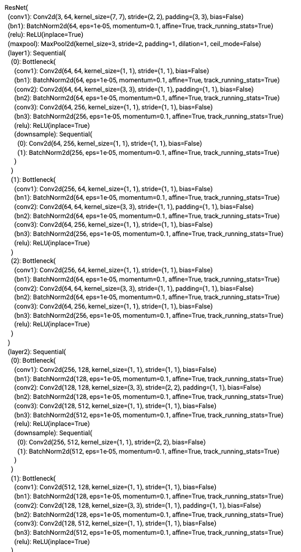
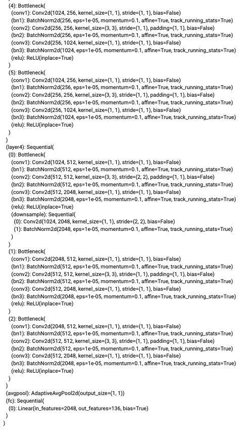

In this project, we apply different types of neural network on facial images to predict the facial keypoints, which, in the previous projects, we have to manually select.
First, we train an initial toy model for nose tip detection with the IMM Face Database. We convert the nose detection problem into pixel coordinate regression with the input as a gray scale image and the output as (x, y) numbers. The input images are preprocessed to be smaller for a faster training time. Below we show some examples of the training data from the dataloader.
The structure of Our CNN is as follows. Each convolution layer is followed by a ReLU followed by a maxpool with kernel size 2*2. The first fully connected layer is followed by a ReLU.
Net(
(conv1): Conv2d(1, 12, kernel_size=(7, 7), stride=(1, 1))
(conv2): Conv2d(12, 16, kernel_size=(5, 5), stride=(1, 1))
(conv3): Conv2d(16, 32, kernel_size=(3, 3), stride=(1, 1))
(fc1): Linear(in_features=896, out_features=128, bias=True)
(fc2): Linear(in_features=128, out_features=2, bias=True)
)
We use Mean Squared Error loss and Adam Optimizer. With a learning rate of 1e-3 or 1e-4 we run the training loop for 25 epoches. As shown, both validation curves have some small jumps during the training, and larger learning rate leads to larger jumps. It's not very obvious from the plots, but the run with lr=1e-4 learns a lot slower than the run with lr=1e-3. When lr=1e-4, the validation loss ends up at 0.00445, while the validation loss achieves 0.00121 with lr=1e-3.
Below we show the nose tip prediction on the validation set from the model with lr=1e-3. The green points are ground truths and the red points are predictions. We can see that most predictions are close to the ground-truth points, while there are some failures. I think the failures mostly come from the person not facing the camera, and some images don't have strong contrast, which creates difficulty for the model to recognize the nose tips.
We also vary the structure of the neural network and change the learning rate to 5e-4. The new structure is as follows. Each convolution layer is followed by a ReLU, and the first three layers are further followed by a maxpool with kernel size 2*2. The first fully connected layer is followed by a ReLU.
Net2(
(conv1): Conv2d(1, 12, kernel_size=(7, 7), stride=(1, 1))
(conv2): Conv2d(12, 16, kernel_size=(5, 5), stride=(1, 1))
(conv3): Conv2d(16, 32, kernel_size=(3, 3), stride=(1, 1))
(conv4): Conv2d(32, 32, kernel_size=(3, 3), stride=(1, 1))
(fc1): Linear(in_features=320, out_features=64, bias=True)
(fc2): Linear(in_features=64, out_features=2, bias=True)
)
From my point of view, the new model has worse performance than our original model.
Next, we move forward to try to detect all 58 facial keypoints. We resize the images to 120*160, and apply data augmentations to prevent model overfitting. The images are randomly flipped horizontally, shifted from x and y axis, and ratate for -15 to 15 degrees. Below are examples of the training data from the dataloader.
The structure of Our CNN is as follows. Each convolution layer is followed by a ReLU, and the 2, 3, 4, 5 layers are further followed by a maxpool with kernel size 2*2. The first fully connected layer is followed by a ReLU.
Net(
(conv1): Conv2d(1, 12, kernel_size=(5, 5), stride=(1, 1))
(conv2): Conv2d(12, 16, kernel_size=(5, 5), stride=(1, 1))
(conv3): Conv2d(16, 32, kernel_size=(3, 3), stride=(1, 1))
(conv4): Conv2d(32, 64, kernel_size=(3, 3), stride=(1, 1))
(conv5): Conv2d(64, 64, kernel_size=(3, 3), stride=(1, 1))
(fc1): Linear(in_features=2240, out_features=512, bias=True)
(fc2): Linear(in_features=512, out_features=116, bias=True)
)
Again, we use Mean Squared Error loss and Adam Optimizer. With a learning rate of 5e-4 we run the training loop for 50 epoches.
Below are the predictions on the validation set. The green points are ground truths and the red points are predictions. We can see there are some successful predictions close to the ground truths, as well as failures (e.g. the 2 images at the middle of the second row). I think the failures might come from the person's perspective, expression, as well as the rotation that makes the image not recognizable from the model.
We also visulize samples of the learned filters of the first and last convolution layers.
Now we transition to using a larger dataset (ibug face in the wild dataset). We preprocess the input images by cropping with bounding boxes, resizing, and using data augmentation, which randomly alters the bringhtness and sturation, as well as shifts and rotates the images. Below are examples of the training data.
We use pretrained ResNet50 model, with the output channel changed to 136. Here we use the colored images as input so we keep the input chennel as 3.
Again, we use Mean Squared Error loss and Adam Optimizer. With a learning rate of 1e-3 we run the training loop for 50 epoches. We use the model with the lowest validation error.
Below are some predictions on the test set. I think in general the predictions are pretty good, except that some points are off because the face is not facing the camera or the face is covered by hand or glasses.
I applied the model to my own images. The model performs pretty well on my faces as they are facing the camera. The prediction on Nana's face (second) is a little off, probably because she is not directly facing the camera, but with an angle.
We can also convert the regression problem into a pixelwise classification problem: For every pixel, the model predicts the probability of it being the keypoint. For input images, we first turn the ground truth keypoints into pixel-aligned heatmaps. I tried applying Gaussian with sigma=25, kernel size=9, but in practice, the Gaussian convolution takes too much time, so I instead use multivariate normal distribution to create heatmaps. For each keypoint, I draw 1000 random samples from a multivariate normal distribution with mean of the keypoint and covariance of [[9, 0], [0, 9]]. Below are examples of accumulated heatmaps for the two methods.
We use pretrained U-Net model, with the output channel changed to 68.
As now we are predicting the probability of each pixel, we use Cross Entropy loss and Adam Optimizer. With a learning rate of 1e-3 we run the training loop for 10 epoches.
To convert the probability map back to point, we take the weighted average of the 15 coordinates with the highest probability. Below are some predictions on the test set. In general the predictions are in good shape, but there are some points off. I think that's because I didn't train enough epochs.
I applied the model to my own images. This model is able to capture the position of most facial features, but does a little worse on the points around the face shape. The results are similar to the test images above. I think the failure is mainly due to the lack of training.
For my Kaggle submission, I continued training my model from part 3 for 50 more epochs (with the same model structure, loss type, optimizer type, and learning rate). I used the model from the epoch that has the lowest validation loss. My mean absolute error is 6.26626 (username: Paris Zhang).
I applied my best model onto the project 3's code to automatically detect the facial keypoints of my own photos. With these correspondence keypoints, I can reproduce my aging series.

We also tried using 1 and 0 mask heatmaps for the landmarks in part 4 instead of Multivariate Normal.
We used the same setting as part 4. As shown, the predictions are worse than using the Multivariate Normal. I think it is expected since one-point mask will probably make it harder for the model to understand the pattern.